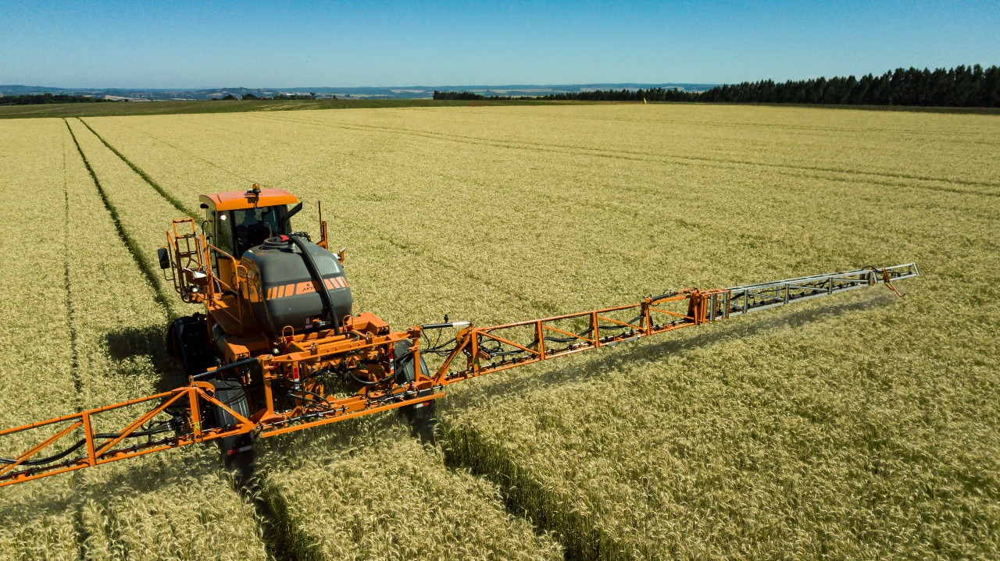
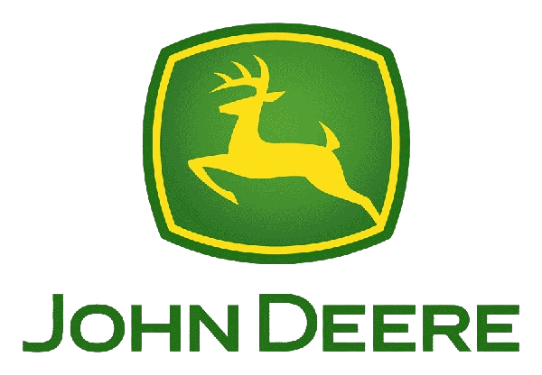
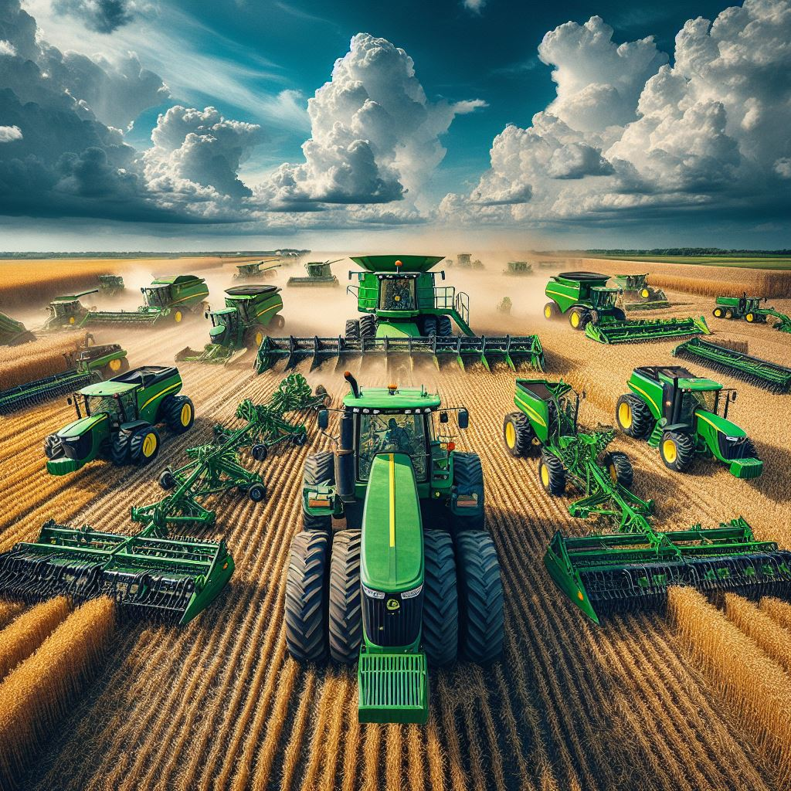
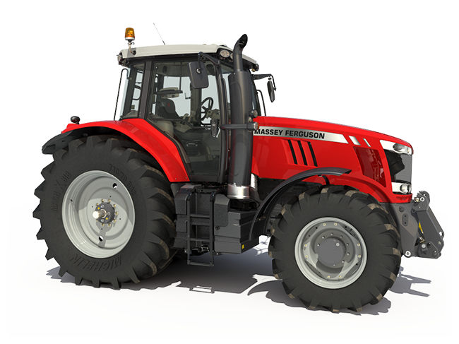
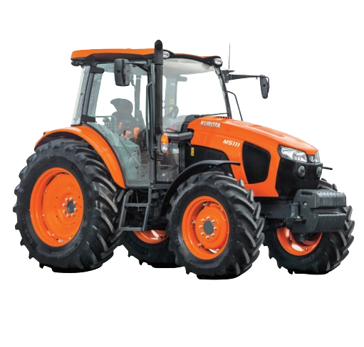
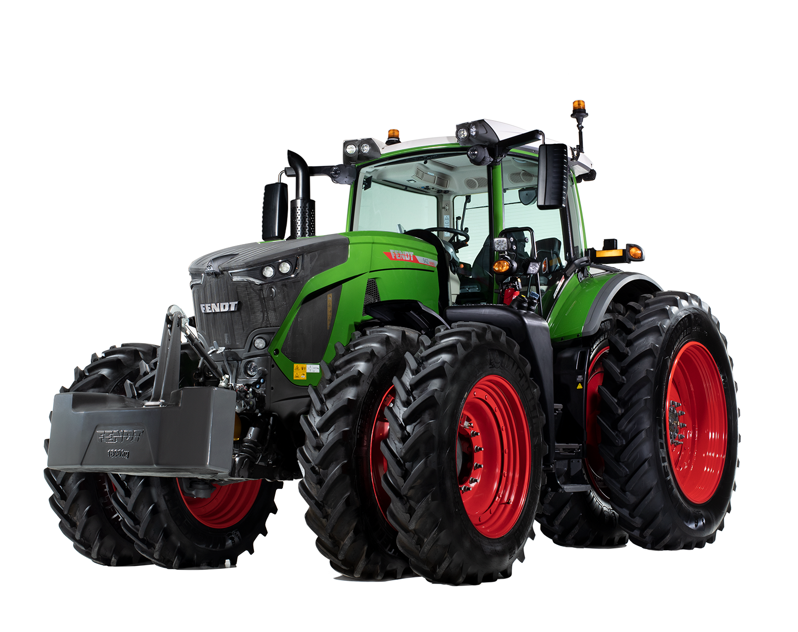
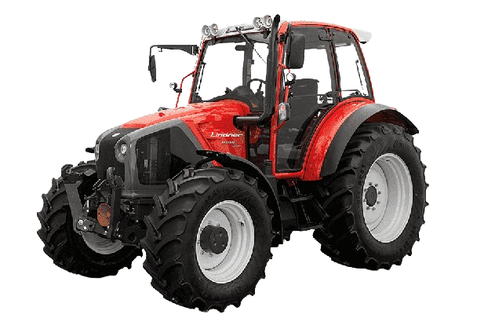

Maquinaria Agrícola

Los implementos agrícolas son herramientas, maquinaria y equipos diseñados específicamente para facilitar y mejorar las labores relacionadas con la agricultura. Los cuales son utilizados en todas las etapas del proceso agrícola, desde la preparación del suelo hasta la cosecha.

Una compañia familiar
Esta microempresa de fabricación de implementos agrícolas da inicio gracias al trabajo y esfuerzo de Daniel del Valle Caballero, cuya experiencia en el área de la soldadura y aplicación de la ingeniería, en el desarrollo de toda la maquinaria agrícola. Con más de 25 años de experiencia, ha perfeccionado y mejorado la implementación de la maquinaria que automatizará las tareas de trabajo en la agricultura.Contando con el prestigio de ser una empresa importadora a toda la republica

Que fabricamos:
Nuestra empresa se especializa en la fabricacion de impentos agricolas como lo son: Pipas, cortadoras, Encamadoras,Subsuelos, Remolques, Escrepas, Palas Hidraulicas y muchos mas( sujetos a disponibilidad)en una zonas urbana a precios negociables.

Pipa 1

Pipa Modelo 1

Escrepa

Pala Hidraulica

Pipa Modelo 2

Encamadora

Subsuelo
Tumbaburro

Spray Gun

Spray Gun 2S
Costos

Chapeadora
La chapeadora se utiliza para cortar y desmenuzar, toda clase de hierbas, malezas y arbustos por motivos ornamentales o necesidades agrícolas.
Precio:$90,000.
Encamadora
Sirve para formar camas o surcos en el suelo donde se plantarán los cultivos. Ayuda a preparar el terreno de manera eficiente y a mantener una distancia uniforme entre las plantas.
Precio: $135,000.
Escrepa
La escrepa es un instrumento de trabajo de gran utilidad para el movimiento de tierra, para la hechura de bordos, emparejar y reparar caminos, rellenar terrenos, etc.
Precio: $255,000.
Pala Hidraulica
Se utiliza para cargar, mover y descargar materiales pesados, como tierra, abono, piedras, etc., en el ámbito agrícola. También es útil para nivelar terrenos y realizar otras tareas de construcción en fincas o campos.
Precio: $105,000.
Pipa de riego
Una pipa de riego agrícola se utiliza para transportar y distribuir agua de riego a los campos y cultivos o satisfacer diversas necesidades potables.
Precio: $370,000.

Remolque
Se utiliza para transportar de manera eficiente y segura diversos tipos de carga en el campo, tales como granos, forraje, fertilizantes, herramientas, y otros insumos agrícolas.
Precio: $145,000.
Subsuelo
Consiste en romper la tierra, desmenuzándola más o menos, a profundidades por debajo de las corrientes, con el fin de aumentar la infiltración y la penetración del aire y las raíces. Es el implemento indicado para tierras que tienen un largo periodo de cultivo, donde el suelo se encuentra compactado entre 20 y 40 cm de profundidad y no permite la adecuada infiltración del agua, afectando el crecimiento de las raíces de el cultivo.
Precio: $45,000.
Tumbaburro
Sirve para proteger la parte delantera del tractor en caso de choques con animales u obstáculos asi , como para empujar obstrucciones en el camino no muy exageradas .
Precio: $25,000.

Spray Gun
Sirve para aplicar pesticidas, insecticidas, venenos , fungicidas y foliares para la siembra de casi todo tipo de cultivo, pero principalmente piña.
Precio: $495,000.
Afiliados y sus Tractores recomendados para los implementos
| Marca | Productos |
|---|---|
| Jhon Deere |  |
| New Hollan |  |
| Massey Ferguson |  |
| Kubota |  |
| Fendt |  |
| Mahindra |  |